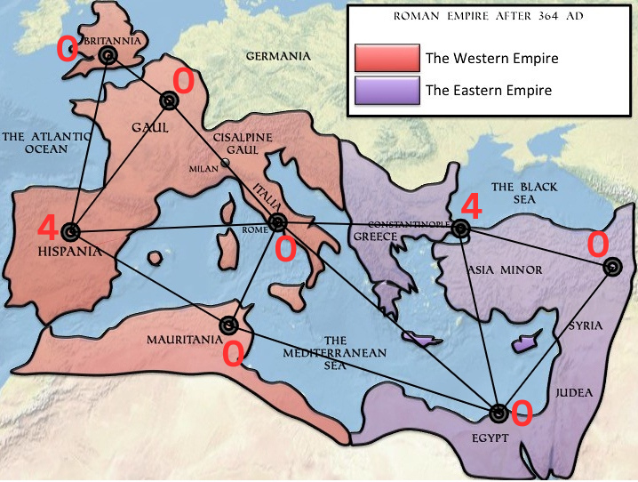

As primeiras meta-heurísticas baseadas em Algoritmos Genéticos e Otimização
por Colônia de Formigas para o PDRT, com uma formulação corrigida de
Programação Linear Inteira para obter soluções exatas.
A Dominação Romana Tripla modela como distribuir níveis de proteção entre
os vértices de um grafo, garantindo que regiões vulneráveis sejam cobertas
por seus vizinhos enquanto o custo total é minimizado.
A ideia nasce de problemas de defesa e também se relaciona a cenários como
alocação de servidores e cobertura de redes. Como a versão de decisão do
problema é NP-completa, encontrar a solução ótima torna-se difícil à medida
que as instâncias crescem. Isso motiva métodos aproximados capazes de produzir
boas soluções em tempo viável.
A regra, em uma linha
Cada região precisa receber proteção suficiente de sua vizinhança.
Σ proteção na vizinhança de v ≥ 3 + número de vizinhos ativos
Em termos formais, cada vértice recebe um valor de 0 a 4. O peso total
é a soma desses valores; o objetivo é encontrar uma configuração válida
com o menor peso possível.

Exemplo de uma função de Dominação Romana Tripla ótima. Os vértices representam
regiões e as arestas representam suas interligações; os números indicam o nível
de proteção atribuído a cada região. Fonte: TCC do autor.
Contribuições
O que o trabalho acrescenta.
Primeiras meta-heurísticas para o PDRT: implementação e avaliação de abordagens baseadas em GA e ACO.
PLI corrigida: uma formulação de Programação Linear Inteira que corrige inconsistências de uma proposta anterior e serve como referência exata.
Base experimental: geração de 30 grafos aleatórios e cálculo dos valores exatos de γ3R(G), além da solução exata da maioria das demais instâncias avaliadas.
Análise comparativa: avaliação de quatro heurísticas do GA, do impacto da busca RVNS no ACO e do gap relativo em relação às soluções ótimas.
Resultados
Desempenho com nuances.
O ACO-FL, que combina ACO e busca RVNS, superou o
GA-FL na maioria dos casos em tempo de execução e
qualidade das soluções. O GA-FL, porém, permaneceu competitivo em
cenários específicos, especialmente em grafos menores e estruturados.
A comparação usou o gap relativo em relação às soluções ótimas da PLI.
Entre todos os grafos avaliados, apenas seis apresentaram gap acima de
50%; os demais ficaram abaixo desse limiar.
30grafos aleatórios gerados com valor exato calculado
ACO-FLmelhor desempenho na maioria dos casos avaliados
6 grafoscom gap relativo acima de 50% no conjunto experimental
Próximos passos
Onde a pesquisa pode avançar.
O trabalho propõe ampliar a busca de hiperparâmetros e investigar novas
estratégias de seleção, cruzamento, mutação e elitismo no GA. Para o ACO,
sugere avaliar outros métodos de seleção e exploração, além de otimizações
de implementação e compilação para reduzir o tempo de execução.